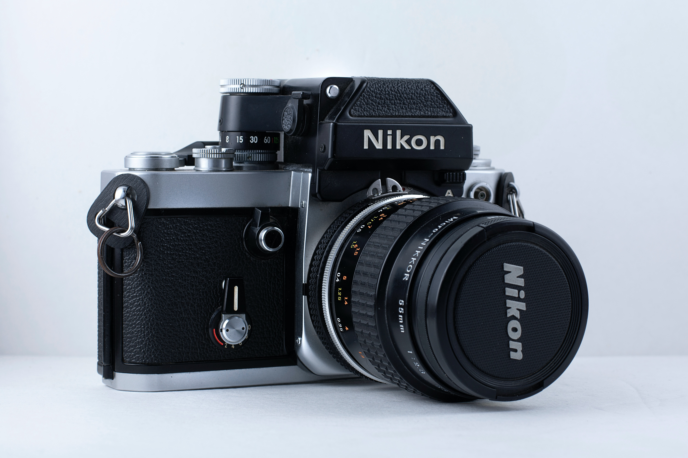

Motto:To be the best Media Company

Sting Media Production Studio is the best choice for everybody.
Be adviced !,
Sting Media studio will give you an experience like never before !
Sting Media Studio started as a brain child project of
Mr Elijah kipruto, who began the studio at a small shop at Rongai town after finishing his form 4 studies. During its early stages he named the shop "Family photo Shop" Elijah began the studio
with a simple travelers camera and a photo printer. He then operate the studio by going out to look for clients around the town, take photos of them then come and develop them in the shop.
He ran this Shop for a period of 2 years. In the year 2014, due to his interest in camera work he joined colledge where
he went to pursue a course in film production.
After finishing his education in 2017 he then embarked on his previous business.
In the year 2018, due to constant requests for videos from his clients. Elijah embarked on opening a video studio along side his previous business.
In the year 2020 he decided to merge the two businesses and that is how MEDIA PRODUCTION STUDIO was born.
Click here to check out my work portfolio.